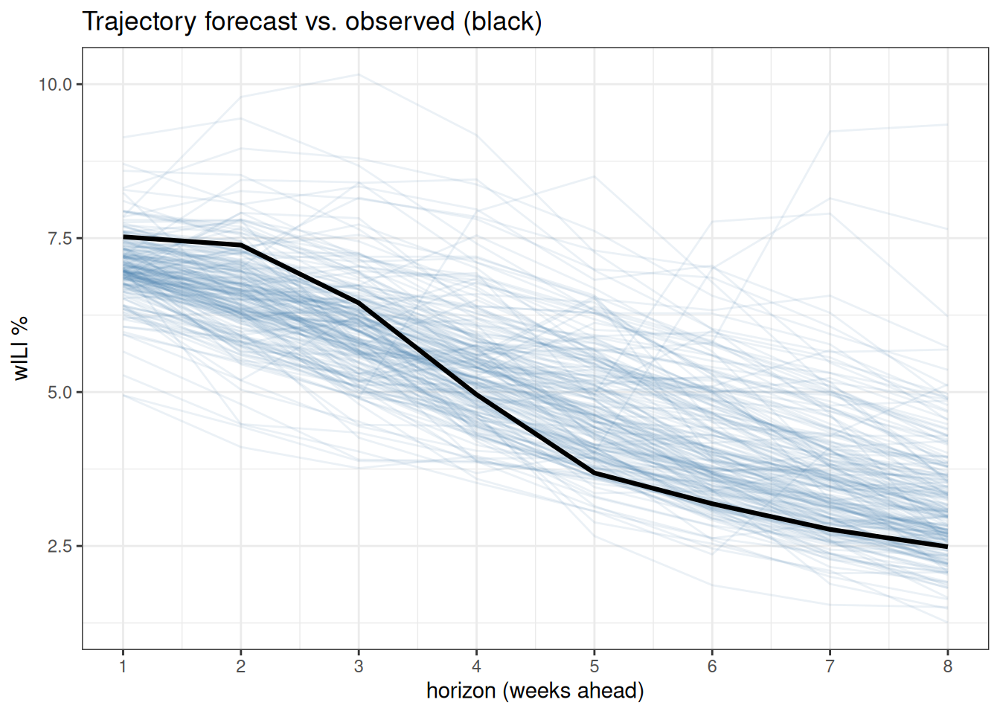
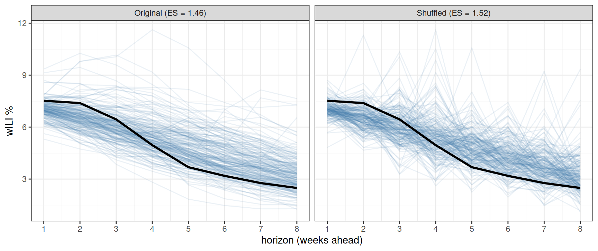

library("nfidd.forecasting")
library("dplyr")
library("tsibble")
library("fable")
library("tidyr")
library("ggplot2")
library("scoringRules")
theme_set(theme_bw())Multivariate forecast evaluation
Introduction
In the last few sessions we built forecasts for many locations and horizons at once and scored them with the CRPS. We scored each horizon and location on its own and then averaged. In this session we supplement that “marginal” approach to scoring and comparing models by introducing the energy score. The energy score is a multivariate extension of the CRPS and allows you to score full trajectories or multiple locations with one score.(Gneiting et al. 2008; Bay et al. 2026; MacArthur et al. 2026)
Slides
Objectives
The aims of this session are to introduce methods for scoring multivariate probabilistic forecasts, for example across time horizons and/or locations.
NoteSetup
Source file
The source file of this session is located at sessions/multivariate-forecast-evaluation.qmd.
Libraries used
In this session we will use the fable package for forecasting, the dplyr, tidyr and tsibble packages for data wrangling, the ggplot2 package for plotting, and the scoringRules package for scoring.
Tip
The best way to interact with the material is via the Visual Editor of RStudio.
Initialisation
We set a random seed for reproducibility.
set.seed(755) # for Hank AaronWe reuse the same fourth-root transformation and multi-location flu data (flu_data_hhs) from the local hub playground session.
data(flu_data_hhs)From marginal to joint forecasts
A probabilistic time-series forecast that is generated as a realistic trajectory of possible future values is tying together distributions at each timepoint. Mathematically, the forecast is a joint distribution over the whole vector of outcomes, where the vector represents values at time \(t+1\) through \(t+h\). When we score each horizon on its own and average, we only ever use the marginal forecasts.
This can be important when, for example, you are trying to assess a forecast near a possible peak, and you are trying to assess what the probability is that a surveillance data signal will decline over the coming weeks. If all you have is quantiles at each horizon, you can’t compute directly what the probability is that the peak will be in a given week. To make that calculation, you need to see the distribution of the trajectories.
Let’s build a sample-path forecast from a simple model – the seasonal AR(2) model from the forecast evaluation session – for national wILI, and generate many possible trajectories for the weeks after our forecast date.
h <- 8L
train_cutoff <- as.Date("2018-01-27") # forecast from around the seasonal peak
## national wILI only, fit on the data available up to the forecast date
us_flu <- flu_data_hhs |> filter(location == "US National")
fit <- us_flu |>
filter(origin_date <= train_cutoff) |>
model(fourier_ar2 = ARIMA(my_fourth_root(wili) ~ pdq(2, 0, 0) +
fourier(period = "year", K = 3)))
## each replicate (.rep) is one full trajectory over the next h weeks
sims <- fit |>
generate(h = h, times = 1000, bootstrap = TRUE) |>
group_by(.rep) |>
mutate(horizon = row_number()) |>
ungroup() |>
as_tibble()Before scoring, let’s look at a sample of the forecast trajectories against what was eventually observed.
## observed trajectory: the actual wILI for the h weeks after the forecast date
observed <- us_flu |> as_tibble() |>
filter(origin_date > train_cutoff) |>
arrange(origin_date) |> slice(seq_len(h)) |>
transmute(horizon = row_number(), wili)
sims |>
filter(as.integer(.rep) <= 200) |>
ggplot(aes(horizon, .sim, group = .rep)) +
geom_line(alpha = 0.1, colour = "#4477AA") +
geom_line(data = observed, aes(y = wili, group = 1),
colour = "black", linewidth = 1.1) +
scale_x_continuous(breaks = seq_len(h)) +
labs(title = "Trajectory forecast vs. observed (black)",
x = "horizon (weeks ahead)", y = "wILI %")
The forecast is a whole cloud of possible paths. To score the entire path at once, we reshape the samples into a matrix with one row per horizon and one column per sample – the format the multivariate scoring functions expect (we can’t use fable for this) – and pull out the observed vector.
samp_wide <- sims |>
select(horizon, .rep, .sim) |>
pivot_wider(names_from = .rep, values_from = .sim) |>
arrange(horizon)
dat_joint <- as.matrix(samp_wide[, -1]) # h rows (horizons) x m columns (samples)
y <- observed$wili # the observed trajectory
y[1] 7.52133 7.38748 6.44688 4.95881 3.68612 3.18626 2.76894 2.48706The energy score
The energy score is a proper scoring rule for a vector outcome \(\mathbf{y}\), and it generalises the CRPS. Writing \(\mathbf{X}, \mathbf{X}'\) for independent draws from the forecast and \(\lVert\cdot\rVert\) for Euclidean distance, it balances accuracy against sharpness exactly as the CRPS does, but reads the whole vector at once. In one dimension it is the CRPS.
TipMathematical definition (optional)
\[ \text{ES}(F, \mathbf{y}) = \mathbb{E}\lVert \mathbf{X} - \mathbf{y} \rVert - \tfrac{1}{2}\,\mathbb{E}\lVert \mathbf{X} - \mathbf{X}' \rVert \]
The first term rewards forecasts whose draws land close to the observed vector. The second term rewards a concentrated cloud of draws.
To compute it, we replace the expectations with averages over our predictive samples. With \(m\) sample trajectories \(\mathcal{X}=\{\mathbf{x}_1, \dots, \mathbf{x}_m\}\) from the forecast, we estimate it by
\[ \widehat{\text{ES}}(\mathcal{X},\mathbf{y}) = \frac{1}{m}\sum_{i=1}^{m}\lVert \mathbf{x}_i - \mathbf{y} \rVert - \frac{1}{2m^2}\sum_{i=1}^{m}\sum_{j=1}^{m}\lVert \mathbf{x}_i - \mathbf{x}_j \rVert \]
TipKey things to note about the energy score
- Small values are better, and it is reported in the units of the data.
- It generalises the CRPS, to which it reduces in one dimension.
- It needs joint samples, so a forecast that couples the horizons and one that treats them independently are scored differently.
- Like the CRPS it is best used to compare forecasts, not read in isolation.
Marginal scores don’t evaluate the shapes of trajectories
A model that generates trajectories gives us forecasts that have dependence across horizons. But if we scored each horizon on its own and averaged (the marginal CRPS), we would be ignoring the multivariate nature of the forecasts. Using the Energy Score adds a small piece to the score that evaluates how well the trajectories align with the observed trajectory.
To show this in practice, we can build a second “forecast” with identical marginals but without across-horizon dependence: we randomly shuffle the samples independently within each horizon, thus breaking any dependence. Every horizon keeps exactly the same set of predicted values, so every per-horizon forecast – and the average CRPS – is unchanged.
set.seed(1)
## shuffle the samples within each horizon, breaking the links between weeks
dat_shuffled <- t(apply(dat_joint, 1, sample))
## marginal (per-horizon) CRPS, averaged over horizons -- identical for both
crps_joint <- mean(scoringRules::crps_sample(y = y, dat = dat_joint))
crps_shuffled <- mean(scoringRules::crps_sample(y = y, dat = dat_shuffled))
c(joint = crps_joint, shuffled = crps_shuffled) joint shuffled
0.4382923 0.4382923 The energy score, which reads the whole trajectory at once, is not fooled. The “joint” forecast shows a lower (better) energy score, indicating that the original forecast is slightly preferred over the one with independent marginal predictions at each horizon.
es_joint <- scoringRules::es_sample(y = y, dat = dat_joint)
es_shuffled <- scoringRules::es_sample(y = y, dat = dat_shuffled)
c(joint = es_joint, shuffled = es_shuffled) joint shuffled
1.462297 1.521769 The plot below shows why. Both panels have the same marginal forecast at each horizon – only the dependence across horizons differs. The original trajectories decline smoothly, like the observed path (black), while the shuffled ones zig-zag across it.
## reshape each h x m matrix to long format: one line per sample trajectory
to_long <- function(mat, lab) as_tibble(t(mat), .name_repair = ~ paste0("h", seq_along(.x))) |>
mutate(.rep = row_number()) |> filter(.rep <= 200) |>
pivot_longer(starts_with("h"), names_to = "horizon", values_to = "wili") |>
mutate(horizon = as.integer(sub("h", "", horizon)), forecast = lab)
labs <- c(sprintf("Original (ES = %.2f)", es_joint),
sprintf("Shuffled (ES = %.2f)", es_shuffled))
paths <- bind_rows(to_long(dat_joint, labs[1]), to_long(dat_shuffled, labs[2])) |>
mutate(forecast = factor(forecast, labs))
obs_both <- expand_grid(forecast = factor(labs, labs), horizon = seq_len(h)) |>
mutate(wili = rep(y, 2))
ggplot(paths, aes(horizon, wili, group = .rep)) +
geom_line(alpha = 0.1, colour = "#4477AA") +
geom_line(data = obs_both, aes(group = 1), colour = "black", linewidth = 1.1) +
facet_wrap(~ forecast) +
scale_x_continuous(breaks = seq_len(h)) +
labs(x = "horizon (weeks ahead)", y = "wILI %")
TipTake 5 minutes
The average CRPS is identical for the two forecasts, but the energy score prefers the original. Look back at the trajectory plot: why does keeping the links between weeks help here?
NoteSolution
The observed data is a coherent path: it declines smoothly from the peak, week after week. The model’s own trajectories share some of that coherence, so as whole vectors they stay close to the observed path and trend. (They have some noise, though, so it’s not like they are all perfectly aligned trajectories.) Shuffling keeps each week’s marginal forecast intact but breaks the link between weeks, producing jagged trajectories that wander away from the observed path. The energy score sees this and scores the shuffled forecast worse; the marginal CRPS, which looks at one horizon at a time, cannot.
Summary
- Using a multivariate score can capture important subtleties about the dependency structure of the forecasts.
- However, often the differences between univariate and multivariate scoring rules are small. The Energy Score still is evaluating distance from the truth, so it might still prefer a tight, jagged forecast that is close to the truth to a wider but smooth forecast that on average isn’t as close to the observations.
Going further
Challenge
- There are other dimensions that a model could be joint across, e.g., location. You can fit a model that is joint across locations with
fable::VAR()and compare its energy score to an independent ARIMA forecast. - Add the variogram score (another multivariate score, available via
scoringRules::vs_sample()) to the joint comparison. How does it differ from the energy score in what it rewards?
Methods in practice
- The
scoringRulespackage documentation covers multivariate scores including the energy and variogram scores. - Hubs increasingly collect sample (trajectory) forecasts rather than only quantiles, which keeps the joint distribution across locations and horizons.(Hubverse Consortium 2026)
- Bay et al. (2026) describe using the energy score to assess trajectories in longer-term scenario predictions.
- MacArthur et al. (2026) use an adapted energy score to evaluate nowcasts of the proportions of SARS-CoV-2 variants circulating at different timepoints.
Wrap up
- Review what you’ve learned in this session with the learning objectives
References
Bay, Clara, Kunpeng Mu, Guillaume St-Onge, Matteo Chinazzi, Jessica T. Davis, and Alessandro Vespignani. 2026. “Evaluation of Stochastic Trajectory-Based Epidemic Models Using the Energy Score.” Epidemics, July, 100929. https://doi.org/10.1016/j.epidem.2026.100929.
Gneiting, Tilmann, Larissa I. Stanberry, Eric P. Grimit, Leonhard Held, and Nicholas A. Johnson. 2008. “Assessing Probabilistic Forecasts of Multivariate Quantities, with an Application to Ensemble Predictions of Surface Winds.” TEST 17 (2): 211–35. https://doi.org/10.1007/s11749-008-0114-x.
Hubverse Consortium. 2026. Model Output. Hubverse documentation. https://docs.hubverse.io/en/latest/user-guide/model-output.html.
MacArthur, Isaac, Thomas Robacker, Bren Case, et al. 2026. Collaborative Estimation and Evaluation of SARS-CoV-2 Variant Nowcasting in the United States. arXiv. https://doi.org/10.48550/arXiv.2606.07129.